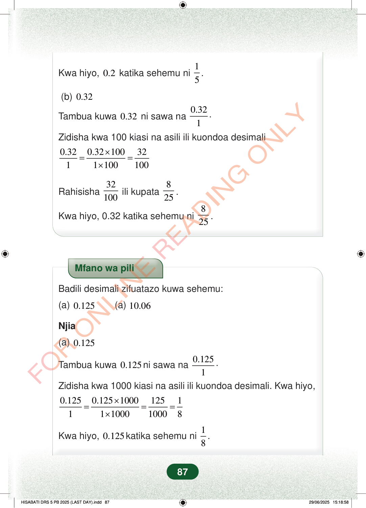

Kwa hiyo,0.2katika sehemu ni15.(b)0.32Tambua kuwa0.32ni sawa na0.321.Zidisha kwa 100 kiasi na asili ili kuondoa desimali0.320.321003211100100×==×Rahisisha32100ili kupata825.Kwa hiyo, 0.32 katika sehemu ni825.Mfano wa piliBadili desimali zifuatazo kuwa sehemu:(a)0.125(a)10.06Njia(a)0.125Tambua kuwa0.125ni sawa na0.1251.Zidisha kwa 1000 kiasi na asili ili kuondoa desimali. Kwa hiyo,0.1250.1251000125111100010008×===×Kwa hiyo,0.125katika sehemu ni18.87
Kwa hiyo, 0.2 katika sehemu ni 1
5 .
(b) 0.32
Tambua kuwa 0.32 ni sawa na 0.32
1 .
Zidisha kwa 100 kiasi na asili ili kuondoa desimali
0.32 0.32 100 32 1 1 100 100 × = = ×
Rahisisha 32
100 ili kupata 8 25 .
Kwa hiyo, 0.32 katika sehemu ni 8
25 .
Mfano wa pili
Badili desimali zifuatazo kuwa sehemu:
(a) 0.125
(a) 10.06
Njia
(a) 0.125
Tambua kuwa 0.125 ni sawa na 0.125
1 .
Zidisha kwa 1000 kiasi na asili ili kuondoa desimali. Kwa hiyo,
0.125 0.125 1000 125 1 1 1 1000 1000 8 × = = = ×
Kwa hiyo, 0.125 katika sehemu ni 1
8 .
87
Hatua za kubadili desimali 0.32 kuwa sehemu. Inaonyesha 0.32 = 32/100, kisha kurahisisha kuwa 8/25.Kwa hiyo, 0.2 katika sehemu ni <math><mfrac><mn>1</mn><mn>5</mn></mfrac></math>.(b) 0.32Tambua kuwa 0.32 ni sawa na <math><mfrac><mn>0.32</mn><mn>1</mn></mfrac></math>.Zidisha kwa 100 kiasi na asili ili kuondoa desimali.<math><mrow><mfrac><mn>0.32</mn><mn>1</mn></mfrac><mo>=</mo><mfrac><mrow><mn>0.32</mn><mo>×</mo><mn>100</mn></mrow><mrow><mn>1</mn><mo>×</mo><mn>100</mn></mrow></mfrac><mo>=</mo><mfrac><mn>32</mn><mn>100</mn></mfrac></mrow></math>Rahisisha <math><mfrac><mn>32</mn><mn>100</mn></mfrac></math> ili kupata <math><mfrac><mn>8</mn><mn>25</mn></mfrac></math>.Kwa hiyo, 0.32 katika sehemu ni <math><mfrac><mn>8</mn><mn>25</mn></mfrac></math>.Mfano wa pili wa kubadili desimali kuwa sehemu. Inaonyesha 0.125 = 125/1000, kisha kurahisisha kuwa 1/8.Mfano wa piliBadili desimali zifuatazo kuwa sehemu:(a) 0.125(a) 10.06Njia(a) 0.125Tambua kuwa 0.125 ni sawa na <math><mfrac><mn>0.125</mn><mn>1</mn></mfrac></math>.Zidisha kwa 1000 kiasi na asili ili kuondoa desimali. Kwa hiyo,<math><mrow><mfrac><mn>0.125</mn><mn>1</mn></mfrac><mo>=</mo><mfrac><mrow><mn>0.125</mn><mo>×</mo><mn>1000</mn></mrow><mrow><mn>1</mn><mo>×</mo><mn>1000</mn></mrow></mfrac><mo>=</mo><mfrac><mn>125</mn><mn>1000</mn></mfrac><mo>=</mo><mfrac><mn>1</mn><mn>8</mn></mfrac></mrow></math>Kwa hiyo, 0.125 katika sehemu ni <math><mfrac><mn>1</mn><mn>8</mn></mfrac></math>.